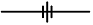
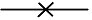
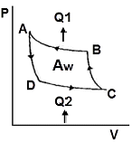
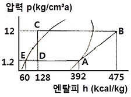
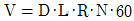
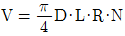
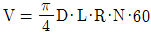
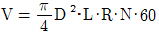
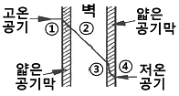

공조냉동기계기능사 (2012-02-12 기출문제)
1과목: 공조냉동안전관리
1. 작업자의 신체를 보호하기 위한 보호구의 구비조건으로 가장 거리가 먼 것은?
- 착용이 간편할 것
- 방호성능이 충분한 것일 것
- 정비가 간단하고 점검, 검사가 용이할 것
- 견고하고 값비싼 고급 품질일 것
(정답률: 95%)

2. 가스용접 작업 시 유의사항이다. 적절하지 못한 것은?
- 산소병은 60℃ 이하 온도에서 보관하고 직사광선을 피해야 한다.
- 작업자의 눈을 보호하기 위해 차광안경을 착용해야 한다.
- 가스누설의 점검을 수시로 해야 하며 점검은 비눗물로 한다.
- 가스용접장치는 화기로부터 5m 이상 떨어진 곳에 설치해야 한다.
(정답률: 86%)
3. 안전사고 예방의 사고예방원리 5단계를 단계별로 바르게 나타낸 것은?
- 사실의 발견 → 평가분석 → 시정책의 선정 → 조직 → 시정책의 적용
- 조직 → 사실의 발견 → 평가분석 → 시정책의 선정 → 시정책의 적용
- 사실의 발견 → 시정책의 선정 → 평가분석 → 시정책의 적용 → 조직
- 조직 → 사실의 발견 → 시정책의 선정 → 시정책의 적용 → 평가분석
(정답률: 64%)
4. 드릴링 작업을 할 때의 안전수칙을 설명한 것으로 바른 것은?
- 옷소매가 긴 작업복이나 장갑을 착용한다.
- 드릴의 착탈은 회전이 완전히 멈춘 다음 행한다.
- 드릴작업을 하면서 칩을 가끔 손으로 제거한다.
- 드릴작업 시에는 보안경을 착용해서는 안 된다.
(정답률: 82%)
5. 도수율(빈도율)이 30인 사업장의 연천인율은 얼마인가?
- 24
- 36
- 72
- 96
(정답률: 78%)
6. 소화효과의 원리가 아닌 것은?
- 질식 효과
- 제거 효과
- 냉각 효과
- 단열 효과
(정답률: 82%)
7. 냉동제조 시설기준에 대한 설명 중 틀린 것은?
- 냉매설비에는 상용압력을 초과하는 경우 즉시 그 압력을 상용압력 이하로 되돌릴 수 있는 안전장치를 설치할 것
- 암모니아 냉동설비의 전기설비는 반드시 방폭성능을 가지는 것일 것
- 냉매설비에는 긴급사태가 발생하는 것을 방지하기 위해 자동제어장치를 설치할 것
- 가연성가스 또는 독성가스 냉매설비의 배관에서 냉매가스가 누출될 경우 그 가스가 체류하지 않도록 필요한 조치를 할 것
(정답률: 76%)
8. 안전관리의 목적을 가장 올바르게 설명한 것은?
- 기능향상을 도모한다.
- 경영의 혁신을 도모한다.
- 기업의 시설투자를 확대한다.
- 근로자의 안전과 능률을 향상시킨다.
(정답률: 91%)
9. 공조설비에 사용되는 NH3 냉매가 눈에 들어간 경우 조치 방법으로 적당한 것은?
- 레몬쥬스 또는 20%의 식초를 바른다.
- 2%의 붕산액으로 세척하고 유동파라핀을 점안한다.
- 차아황산나트륨 포화용액으로 씻어낸다.
- 암모니아수로 씻는다.
(정답률: 83%)
10. 보일러에 스케일 부착으로 인한 영향으로 틀린 것은?
- 전열량 증가
- 연료소비량 증가
- 과열로 인하 파열사고 위험발생
- 보일러효율 저하
(정답률: 74%)
11. 안전⋅보건표지의 색채에서 바탕은 파란색 관련 그림은 흰색으로 된 표지로 맞는 것은?
- 금지표지
- 경고표지
- 지시표지
- 안내표지
(정답률: 74%)
12. 토출 압력이 너무 낮은 경우의 원인으로 적절하지 못한 것은?
- 냉매 충전량 과다
- 토출밸브에서의 누설
- 냉각수 수온이 너무 낮아서
- 냉각 수량이 너무 많아서
(정답률: 52%)
13. 전기기계 기구에서 절연상태를 측정하는 계기로 맞는 것은?
- 검류계
- 전류계
- 절연 저항계
- 접지 저항계
(정답률: 80%)
14. 전기 용접작업을 할 때 옳지 않은 것은?
- 비오는 날 옥외에서 작업하지 않는다.
- 소화기를 준비한다.
- 가스관에 접지한다.
- 화상에 주의한다.
(정답률: 89%)
15. 정 작업 시 안전 작업수칙으로 옳지 않은 것은?
- 정의 머리가 둥글게 된 것은 사용하지 말 것
- 처음에는 가볍게 때리고 점차 타격을 가할 것
- 철재를 절단할 때에는 철편이 날아 튀는 것에 주의할 것
- 표면이 단단한 열처리 부분은 정으로 가공 할 것
(정답률: 84%)
2과목: 냉동기계
16. 다음 설명 중 틀린 것은?
- 유압 보호 스위치의 종류는 바이메탈식과 가스통식이 있다.
- 단수 릴레이는 수냉식 응축기에서 브라인이나 냉각수가 단수 또는 감수 시 압축기를 정지시키는 스위치다.
- 가용전은 토출가스의 영향을 직접 받지 않는 곳에 설치한다.
- 파열판은 일단 동작된 후 내부 압력이 낮아지면 가스의 방출이 정지되며, 다시 사용할 수 있다.
(정답률: 77%)
17. 내식성이 우수하고 열전도율이 비교적 크며 굽힘성 등이 좋아 냉난방관, 급수관 등에 널리 이용되는 관은?
- 구리관
- 납관
- 합성수지관
- 합금강 강관
(정답률: 79%)
18. 열용량에 대한 설명으로 맞는 것은?
- 어떤 물질 1kg의 온도를 10℃ 올리는데 필요한 열량을 뜻한다.
- 어떤 물질의 온도를 1℃ 올리는데 필요한 열량을 뜻한다.
- 물 1kg의 온도를 0.1℃ 올리는데 필요한 열량을 뜻한다.
- 물 1lb의 온도를 1℉ 올리는데 필요한 열량을 뜻한다.
(정답률: 80%)
19. 브라인 냉매에 관한 설명 중 틀린 것은?
- 무기질 브라인 중 염화나트륨이 염화칼슘보다 부식성이 더 크다.
- 염화칼슘 브라인은 공정점이 낮아 제빙, 냉장 등으로 사용된다.
- 브라인 냉매의 pH값은 7.5~8.2(약 알카리)로 유지하는 것이 좋다.
- 브라인은 유기질과 무기질로 구분되며 유기질 브라인의 부식성이 더 크다.
(정답률: 75%)
20. 주기가 0.002S 일 때 주파수는 몇 Hz인가?
- 400
- 450
- 500
- 550
(정답률: 60%)
21. 액 순환식 증발기에 대한 설명 중 맞는 것은?
- 오일이 체류할 우려가 크고 제상 자동화가 어렵다.
- 냉매량이 적게 소요되며 액펌프, 저압수액기 등 설비가 간단하다.
- 증발기 출구에서 액은 80% 정도이고 기체는 20% 정도 차지한다.
- 증발기가 하나라도 여러 개의 팽창밸브가 필요하다.
(정답률: 76%)
22. 배관시공 시 진동 및 충격을 완화시키기 위하여 설치하는 기기는?
- 행거
- 서포트
- 브레이스
- 레스트레인트
(정답률: 66%)
23. 냉동기유의 구비조건 중 옳지 않은 것은?
- 응고점과 유동점이 높을 것
- 인화점이 높을 것
- 점도가 적당할 것
- 전기절연 내력이 클 것
(정답률: 65%)
24. 2단 압축냉동장치에서 저압축(흡입압력)이 0kgf/cm2g, 고압측(토출압력)이 15kgf/cm2g이었다. 이때 중간 압력은 약 몇 kgf/cm2g 인가?
- 2.03
- 3.03
- 4.03
- 5.03
(정답률: 49%)
25. 터보 냉동기 윤활 사이클에서 마그네틱 플러그가 하는 역할은?
- 오일 쿨러의 냉각수 온도를 일정하게 유지하는 역할
- 오일 중의 수분을 제거하는 역할
- 윤활 사이클로 공급되는 유압을 일정하게 하여 주는 역할
- 윤활 사이클로 공급되는 철분을 제거하여 장치의 마모를 방지하는 역할
(정답률: 76%)
26. 수액기에 부착되지 않는 것은?
- 액면계
- 안전밸브
- 전자밸브
- 오일드레인 밸브
(정답률: 57%)
27. 두 가지 금속으로 폐회로를 만들었을 때 접합점에 온도 차이를 주면 열기전력이 발생하는 현상은?
- 평형 효과
- 톰슨 효과
- 열전 효과
- 펠티어 효과
(정답률: 64%)
28. 흡입배관에서 압력손실이 발생하면 나타나는 현상이 아닌 것은?
- 흡입압력의 저하
- 토출가스 온도의 상승
- 비체적 감소
- 체적효율 저하
(정답률: 56%)
29. 유니언 나사이음의 도시기호로 맞는 것은?(오류 신고가 접수된 문제입니다. 반드시 정답과 해설을 확인하시기 바랍니다.)


(정답률: 78%)
30. 가열원이 필요하며 압축기가 필요 없는 냉동기는?
- 터보 냉동기
- 흡수식 냉동기
- 회전식 냉동기
- 왕복동식 냉동기
(정답률: 74%)
31. 옴의 법칙에 대한 설명 중 옳은 것은?
- 전류는 전압에 비례한다.
- 전류는 저항에 비례한다.
- 전류는 전압의 2승에 비례한다.
- 전류는 저항의 2승에 비례한다.
(정답률: 75%)
32. 주철관을 절단할 때 사용하는 공구는?
- 원판 그라인더
- 링크형 파이프커터
- 오스터
- 체인블럭
(정답률: 79%)
33. 냉동기의 스크류 압축기(Screw Compressor)에 대한 특징 설명 중 잘못된 것은?
- 암, 수 2개 나선형 로터의 맞물림에 의해 냉매가스를 압축한다.
- 액격 및 유격이 적다.
- 왕복동식과 비교하여 동일 냉동능력일 때 압축기 체적이 크다.
- 흡입, 토출 밸브가 없다.
(정답률: 55%)
34. 만액식 증발기에 사용되는 팽창밸브는?
- 저압식 플로트 밸브
- 온도식 자동 팽창밸브
- 정압식 자동 팽창밸브
- 모세관 팽창밸브
(정답률: 44%)
35. 다음의 역 카르노 사이클에서 냉동장치의 각 기기에 해당되는 구간이 바르게 연결된 것은?

- B→A 응축기, C→B 팽창변, D→C 증발기, A→D 압축기
- B→A 증발기, C→B 압축기, D→C 응축기, A→D 팽창변
- B→A 응축기, C→B 압축기, D→C 증발기, A→D 팽창변
- B→A 압축기, C→B 응축기, D→C 증발기, A→D 팽창변
(정답률: 74%)
36. 다음 용어의 설명 중 맞지 않는 것은?
- 냉각 : 식품을 얼리지 않는 범위 내에서 온도를 낮추는 것
- 제빙 : 물을 동결하여 얼음을 생산하는 것
- 동결 : 어떤 물체를 가열하여 얼리는 것
- 저빙 : 생산된 얼음을 저장하는 것
(정답률: 76%)
37. 냉매의 건조도가 가장 큰 상태는?
- 과냉액
- 습포화 증기
- 포화액
- 건조포화 증기
(정답률: 80%)
38. 안전사용 최고온도가 가장 높은 배관 보온재는?
- 우모펠트
- 폼 폴리스티렌
- 규산칼슘
- 탄산마그네슘
(정답률: 52%)
39. 어떤 냉동기의 냉동능력이 4300kJ/h, 성적계수 6, 냉동효과 7.1kJ/kg, 응축기 방열량 8.36kJ/kg 일 경우 냉매 순환량은 약 얼마인가?
- 450kg/h
- 5⑤kg/h
- 550kg/h
- 6⑤kg/h
(정답률: 36%)
40. 냉동능력이 45냉동톤인 냉동장치의 수직형 쉘 엔드 튜브응축기에 필요한 냉각수량은 약 얼마인가? (단, 응축기 입구 온도는 23℃이며, 응축기 출구 온도는 28℃이다.)
- 38844(L/h)
- 43200(L/h)
- 51870(L/h)
- 60250(L/h)
(정답률: 33%)
41. 다음 p-h 선도는 NH3를 냉매로 하는 냉동 장치의 운전 상태를 냉동 사이클로 표시한 것이다. 이 냉동장치의 부하가 50000kcal/h일 때 이 응축기에서 제거해야 할 열량은 약 얼마인가?

- 209032kcal/h
- 41813kcal/h
- 65720kcal/h
- 52258kcal/h
(정답률: 37%)
42. 냉동장치의 능력을 나타내는 단위로서 냉동톤(RT)이 있다. 1냉동톤을 설명한 것으로 옳은 것은?
- 0℃의 물 1 kg을 24시간에 0℃의 얼음으로 만드는데 필요한 열량
- 0℃의 물 1 ton을 24시간에 0℃의 얼음으로 만드는데 필요한 열량
- 0℃의 물 1 kg을 1시간에 0℃의 얼음으로 만드는데 필요한 열량
- 0℃의 물 1 ton을 1시간에 0℃의 얼음으로 만드는데 필요한 열량
(정답률: 81%)
43. 공정점이 -55℃로 얼음제조에 사용되는 무기질 브라인으로 가장 일반적으로 쓰이는 것은?
- 염화칼슘 수용액
- 염화마그네슘 수용액
- 에틸렌글리콜
- 프로필렌글리콜
(정답률: 68%)
44. 왕복 압축기에서 이론적 피스톤 압출량(m3/h)의 산출식으로 옳은 것은? (단, 기통수 N, 실린더내경 D[m], 회전수 R[rpm], 피스톤행정 L[m]이다.)




(정답률: 75%)
45. 용접 접합을 나사 접합에 비교한 것 중 옳지 않은 것은?
- 누수의 우려가 적다.
- 유체의 마찰 손실이 많다.
- 배관 상으로 공간 효율이 좋다.
- 접합부의 강도가 크다.
(정답률: 78%)
3과목: 공기조화
46. 보일러의 종류 중 원통형 보일러에 해당하지 않는 것은?
- 입형 보일러
- 노통 보일러
- 관류 보일러
- 연관 보일러
(정답률: 64%)
47. 공기조화기에 사용되는 공기가열 코일이 아닌 것은?
- 직접팽창코일
- 온수코일
- 증기코일
- 전열코일
(정답률: 66%)
48. 공기를 가습하는 방법으로 적당하지 않은 것은?
- 직접 팽창코일의 이용
- 공기세정기의 이용
- 증기의 직접분무
- 온수의 직접분무
(정답률: 58%)
49. 급기, 배기 모두 기계를 이용한 환기법으로 보일러실 등에 사용되는 것은?
- 제1종 기계 환기법
- 제2종 기계 환기법
- 제3종 기계 환기법
- 제 4종 기계 환기법
(정답률: 73%)
50. 상대습도에 대한 설명 중 맞는 것은?
- 습공기에 포함되는 수증기의 양과 건조공기 양과의 중량비
- 습공기의 수증기압과 동일 온도에 있어서 포화공기의 수증기압의 비
- 포화상태의 수증기의 분량과의 비
- 습공기의 절대습도와 그와 동일 온도의 포화 습공기의 절대 습도의 비
(정답률: 52%)
51. 원심송풍기의 풍량 제어방법으로 적당하지 않은 것은?
- 온·오프제어
- 회전수제어
- 흡입 베인제어
- 댐퍼제어
(정답률: 66%)
52. 케비테이션(공동현상)의 방지대책이 아닌 것은?
- 펌프의 흡입양정을 짧게 한다.
- 펌프의 회전수를 적게 한다.
- 양흡입 펌프를 단흡입 펌프로 바꾼다.
- 흡입관경은 크게 하며 굽힘을 적게 한다.
(정답률: 65%)
53. 다음의 그림은 열흐름을 나타낸 것이다. 열흐름에 대한 용어로 틀린 것은?

- ① → ② : 열전달
- ② → ③ : 열관류
- ③ → ④ : 열전달
- ① → ④ : 열통과
(정답률: 70%)
54. 보건용 공기조화에서 쾌적한 상태를 제공하여 주는 4가지 주요한 요소에 해당되지 않는 것은?
- 온도
- 습도
- 기류
- 음향
(정답률: 89%)
55. 공조방식 중 각층 유닛방식의 장점으로 틀린 것은?
- 각 층의 공조기 설치로 소음과 진동의 발생이 없다.
- 각 층별로 부분 부하운전이 가능하다.
- 중앙기계실의 면적을 적게 차지하고 송풍기 동력도 적게 든다.
- 각층 슬래브의 관통 덕트가 없게 되므로 방재상 유리하다.
(정답률: 69%)
56. 난방부하가 3600kcal/h인 실에 온수를 열매로 하는 방열기를 설치하는 경우 소요방열 면적은 몇 m2인가? (단, 방열기의 방열량은 표준방열량[kcal/m2·h]을 기준으로 한다.)
- 2.0
- 4.0
- 6.0
- 8.0
(정답률: 47%)
57. 공조되는 인접실과 5℃의 온도차가 나는 경우에 벽체를 통한 관류열량은? (단, 벽체의 열관류율은 0.5kcal/m2h℃이며, 인접실과 접한 벽체의 면적은 300m2이다.)
- 215kcal/h
- 325kcal/h
- 750kcal/h
- 1500kcal/h
(정답률: 57%)
58. 공조용 저속덕트를 등마찰법으로 설계할 때 사용하는 단위마찰 저항으로 맞는 것은?
- 0.08~0.15㎜Ag/m
- 0.8~1.5㎜Ag/m
- 8~15㎜Ag/m
- 80~150㎜Ag/m
(정답률: 53%)
59. 온풍난방의 장점이 아닌 것은?
- 예열시간이 짧아 비교적 연료소비량이 적다.
- 온도의 자동제어가 용이하다.
- 필터를 채택하므로 깨끗한 공기를 유지할 수 있다.
- 실내온도 분포가 균등하다.
(정답률: 64%)
60. 보일러로부터의 증기 또는 온수나, 냉동기로부터의 냉수를 객실에 있는 유닛으로 공급시켜 냉·난방을 하는 것으로 덕트 스페이스가 필요 없고, 각 실의 제어가 쉬워서 주택, 여관 등과 같이 재실인원이 적은 방에 적절한 방식은?
- 전 공기 방식
- 전 수 방식
- 공기-수 방식
- 냉매 방식
(정답률: 55%)